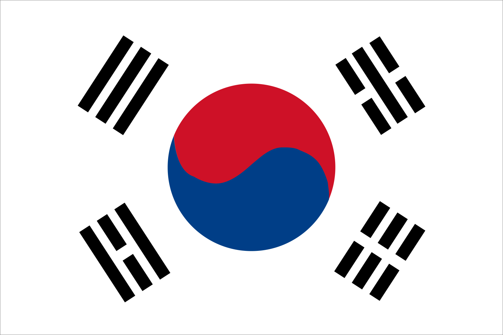

South Korea
대한민국 (In Hangul)

South Korea, country in East Asia. It occupies the southern portion of the Korean peninsula. The country is bordered by the Democratic People’s Republic of Korea (North Korea) to the north, the East Sea (Sea of Japan) to the east, the East China Sea to the south, and the Yellow Sea to the west; to the southeast it is separated from the Japanese island of Tsushima by the Korea Strait. South Korea makes up about 45 percent of the peninsula’s land area. The capital is Seoul (Sŏul).
South Korea faces North Korea across a demilitarized zone (DMZ) 2.5 miles (4 km) wide that was established by the terms of the 1953 armistice that ended fighting in the Korean War (1950–53). The DMZ, which runs for about 150 miles (240 km), constitutes the 1953 military cease-fire line and roughly follows latitude 38° N (the 38th parallel) from the mouth of the Han River on the west coast of the Korean peninsula to a little south of the North Korean town of Kosŏng on the east coast.
Quick Links
- Economy
- Language
- Religion
- Climate
- Food
Economy
The South Korean economy has grown remarkably since the early 1960s. In that time, South Korea transformed itself
from a poor agrarian society to one of the world’s most highly industrialized nations. This growth was driven primarily by the development of export-oriented industries and the abundance of highly skilled and educated labour, fostered by strong government support. Government and business leaders together fashioned a strategy of targeting specific industries for development, and beginning in 1962 this strategy was implemented in a series of economic development plans. The first targeted industries were textiles and light manufacturing, followed in the 1970s by such heavy industries as iron and steel and chemicals. Still later, the focus shifted to such high-technology industries as automobiles, electronics, and information technology.
The government exercised strong controls on industrial development, giving most support to the large-scale projects of the emerging giant corporate conglomerates called chaebŏl. As a result, small and medium-size industries that were privately managed became increasingly difficult to finance, and many of these became, in essence, dependent subcontractors of the chaebŏl.
Korea joined the Organisation for Economic Co-operation and Development (OECD) in 1996 and took a step closer to becoming an economically advanced country. In the early 21st century, Korea’s per capita gross national income far exceeded those of most of its neighbours, other than Japan and Taiwan. These notable accomplishments, however, have at times been overshadowed by economic difficulties caused by both external and domestic factors..
Go to top
Languages
Korean is the official language of South Korea, and is classified by most linguists as a language isolate. It incorporates a significant number of loan words from Chinese. Korean uses an indigenous writing system called Hangul, created in 1446 by King Sejong to provide a convenient alternative to the Classical Chinese Hanja characters that were difficult to learn and did not fit the Korean language well. South Korea still uses some Chinese Hanja characters in limited areas, such as print media and legal documentation.
The Korean language in South Korea has a standard dialect known as Seoul (after the capital city), with an additional 4 Korean language dialect groups in use around the country.
Almost all South Korean students today learn English throughout their education, with some optionally choosing Japanese or Mandarin as well.
Go to top
Religion
Freedom of religion is constitutionally guaranteed in South Korea, and there is no national religion. There also is little uniformity of religious belief, a situation that often is confusing to outside observers. Historically, several religions prevailed successively: shamanism (the religious belief in gods, demons, and ancestral spirits responsive to a priest, or shaman), Buddhism, Daoism, and Confucianism. None of these religions was abandoned, however, when one supplanted another in dominance, and all have had a role in the country’s sociocultural development. Thus, the rites of shamanism (which has existed in Korea since ancient times) are still practiced by many. The principles and social outlook of Confucianism are still much in evidence in Korean daily life and family relationships, and Buddhism remains influential—even among people who may be nominally Christian, for example. Approximately one-fourth of the population professes Christianity, with Protestants (particularly Presbyterians and Methodists), independent Christians, and Roman Catholics the largest groups. Less than one-sixth of the population is Buddhist.
Go to top
Climate
The greatest influence on the climate of the Korean peninsula is its proximity to the main Asian landmass. This produces the marked summer-winter temperature extremes of a continental climate while also establishing the northeast Asian monsoons (seasonal winds) that affect precipitation patterns. The annual range of temperature is greater in the north and in interior regions of the peninsula than in the south and along the coast, reflecting the relative decline in continental influences in the latter areas.
South Korea’s climate is characterized by a cold, relatively dry winter and a hot, humid summer. The coldest average monthly temperatures in winter drop below freezing except along the southern coast. The average January temperature at Seoul is in the low 20s °F (about −5 °C), while the corresponding average at Pusan (Busan), on the southeast coast, is in the mid-30s °F (about 2 °C). By contrast, summer temperatures are relatively uniform across the country, the average monthly temperature for August (the warmest month) being in the high 70s °F (about 25 °C).
Annual precipitation ranges from about 35 to 60 inches (900 to 1,500 mm) on the mainland. Taegu, on the east coast, is the driest area, while the southern coast is the wettest; southern Cheju Island receives more than 70 inches (1,800 mm) annually. Up to three-fifths of the annual precipitation is received in June–August, during the summer monsoon, the annual distribution being more even in the extreme south. Occasionally, late-summer typhoons (tropical cyclones) cause heavy showers and storms along the southern coast. Precipitation in winter falls mainly as snow, with the heaviest amounts occurring in the T’aebaek Mountains. The frost-free season ranges from 170 days in the northern highlands to more than 240 days on Cheju Island.
Go to top
Food
Food is an important part of Korean cultural identity. In the diets of even the most Westernized urban dwellers, traditional Korean cuisine, which emphasizes grains—especially rice—and fresh vegetables, continues to occupy a dominant role even amid the popularity of pizza, hamburgers, sushi, Chinese food, and other foreign dishes. A Korean meal generally consists of rice, soup or stew, and a number of side dishes, almost invariably among them kimchi, or pickled vegetables. Such is the importance of kimchi in the national diet that an estimated 160 or more varieties have been identified, and there is a museum in Seoul dedicated to the dish. The most common type is the spicy paech’u (Chinese cabbage) kimchi. Although many families today buy most of their kimchi in supermarkets, many others still make their own. The traditional practice of kimjang, in which villages and families devoted several days in the autumn to preparing the winter supply of kimchi, is celebrated in such annual kimjang festivals as that held in the southwestern city of Kwangju. Other popular Korean dishes are bibimbap (rice mixed with vegetables, egg, a spicy sauce, and sometimes meat), jjajangmyŏn (noodles in a black-bean sauce), pulgogi (or bulgogi; marinated meat grilled over charcoal), and samgyet’ang (a soup of stewed whole chicken stuffed with rice and ginseng), which is eaten as a restorative, particularly during hot weather.
Go to top
- The End -